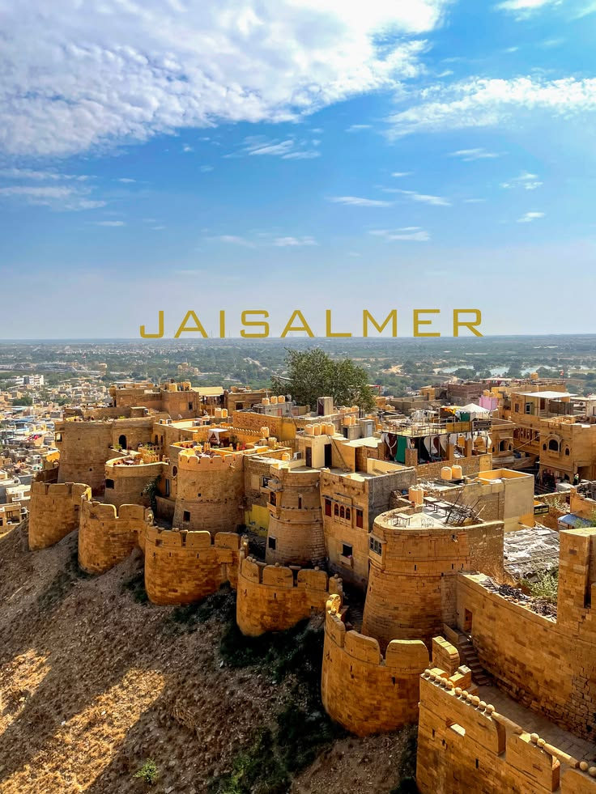
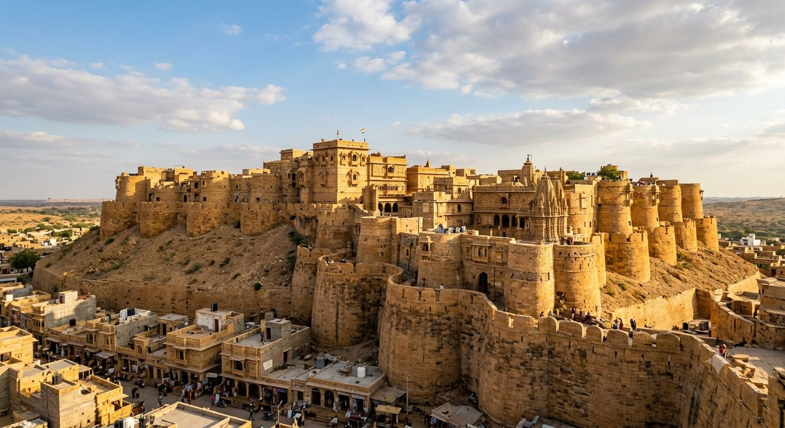

01


UNESCO Living Fort
Chapter I — The Living Citadel
Jaisalmer Fort
"A sandstone fortress that rises seamlessly from the Thar, where four thousand souls still call ancient bastions home."
Unlike static museum fortresses, Sonar Qila breathes with daily life. Walk through winding golden alleys where centuries-old carved balconies shadow traditional handicraft artisans, quiet Jain temples, and rooftop tea stalls facing limitless horizon views.
Curated Experiences:
Royal Palace Museum
15th-Century Jain Temples
Sunset Rooftop Dining